中枢只做集成：发现、协议、目录、策略、路由五件事；图谱算法全部住在 provider 里。本页解释三条入口、一份不可变快照、四把策略门与一条纯编排流水线。
这张长图按「总览 → 架构 → 命令面 → 行为与门禁 → 错误处理 → 流水线与发布面 → 工程事实 → 契约实测」组织。每张面板右下角的编号是声明编号：30 条声明逐条登记在交付目录的验证层，每条都给出冻结证据与源锚点，任何一个数字都可以被独立复算。显示层不放任何代码细节——那是审计层的事。
两条铁律定边界：中枢只做集成，参数面永远来自 provider 自描述。三个二进制入口共享同一份不可变能力快照。
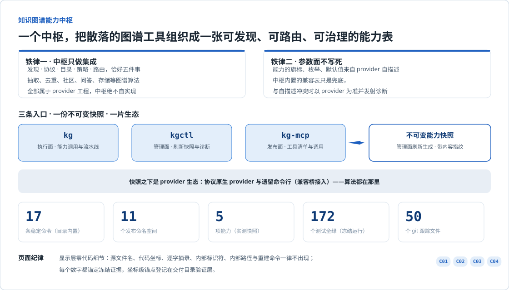
发现、协议、目录、策略、路由五个职责构成内核；provider 分协议原生与遗留命令行两侧接入，路由排序确定。
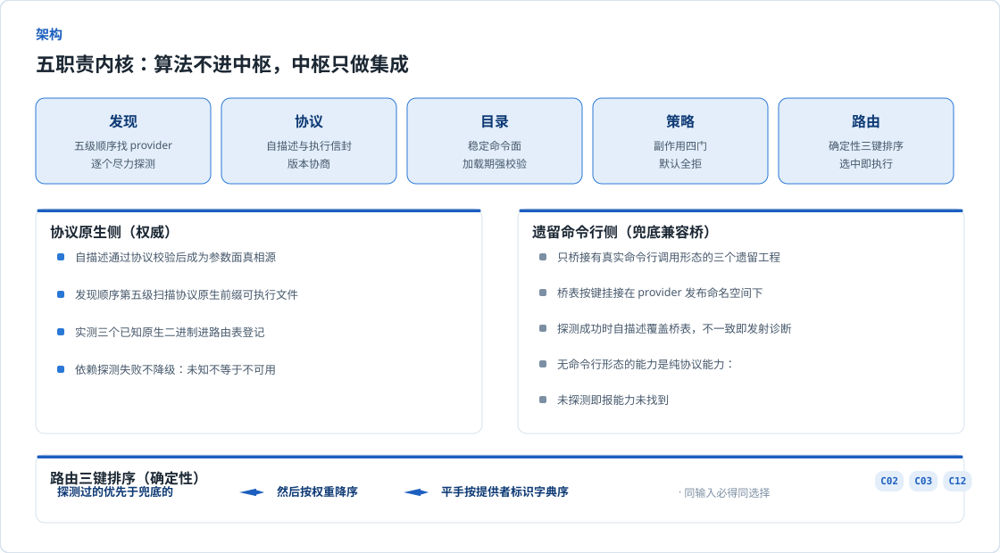
只读面永不启动 provider（日志实测为零）；执行面只对最终选中者做一次复核与调用。
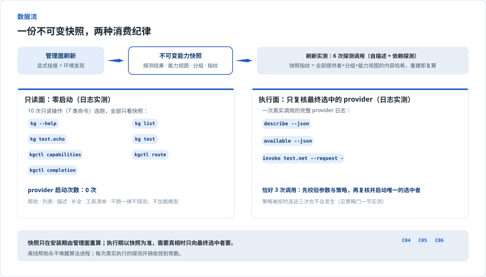
执行面、管理面、发布面各持一段动词；内置目录是唯一长期稳定契约，加载期强校验。
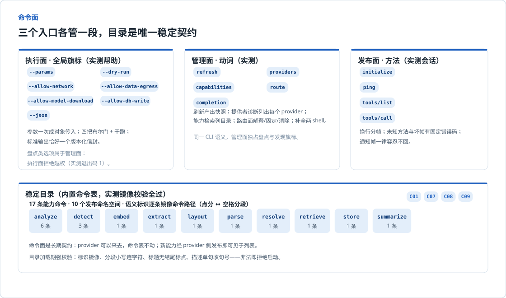
自描述、依赖探测、调用三个动词承载全部 provider 通信；版本协商与清单校验把失败分成两类。
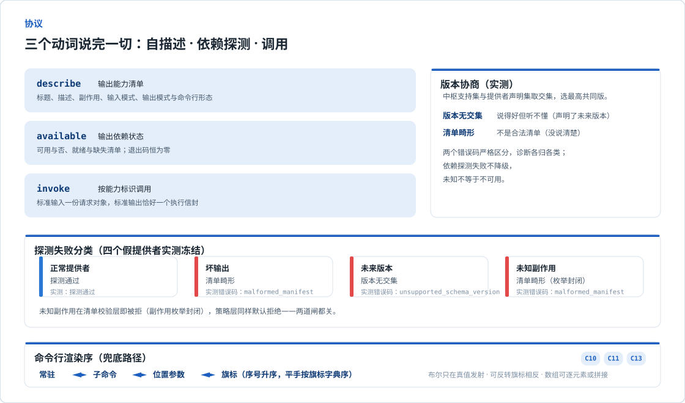
四类副作用对应四把旗标；未知副作用无门可开；干跑渲染完整执行计划而零副作用。
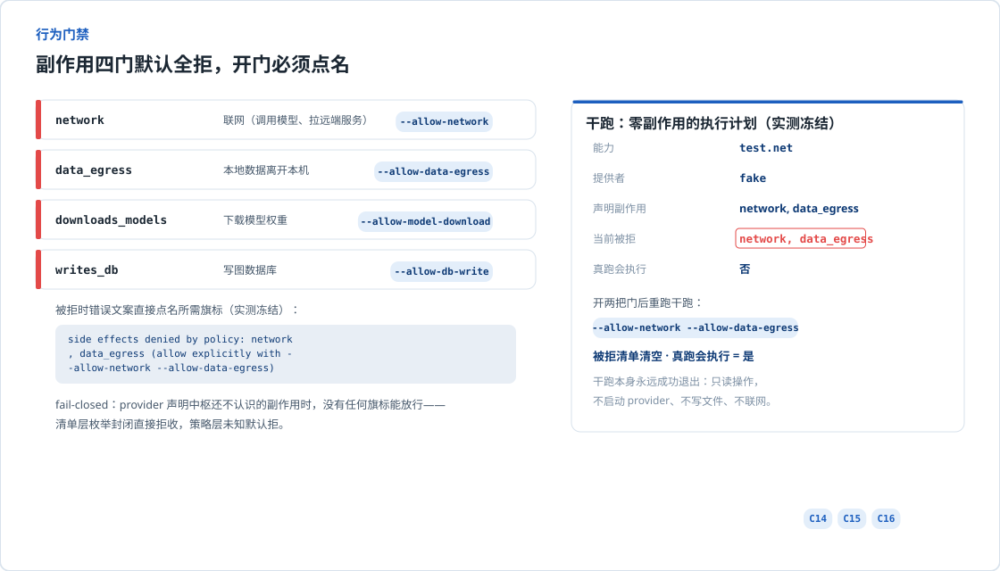
机器错误码集合固定；标准输出永远恰好一个信封；失败契约逐例实测冻结。
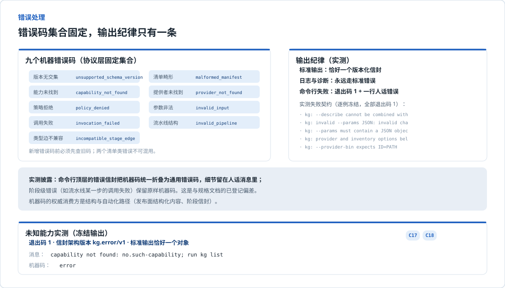
每一步都是一次完整路由调用；类型边在计划期校验；工作目录自包含；校验和一致即复用。
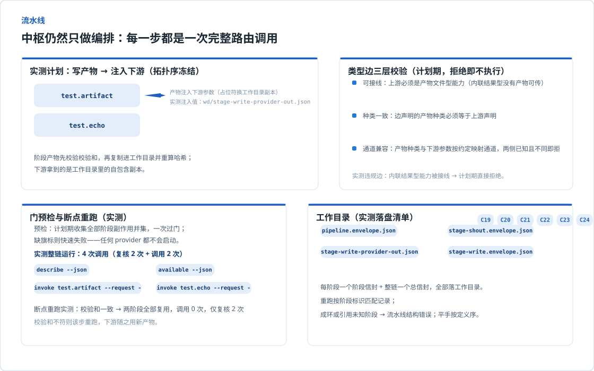
工具清单由同一份快照运行时派生；策略门由启动配置注入；帧级错误语义固定。
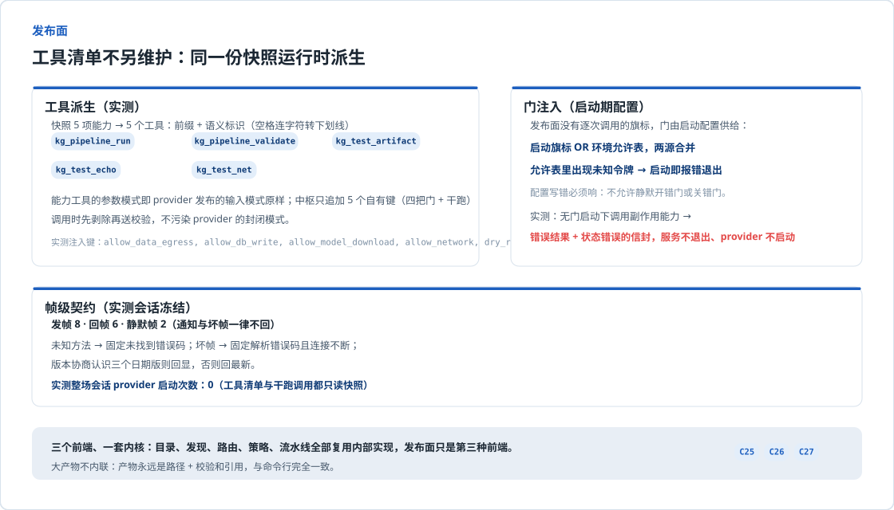
规模先枚举后求和；两层测试网全绿冻结；全部数字锚定证据文件。
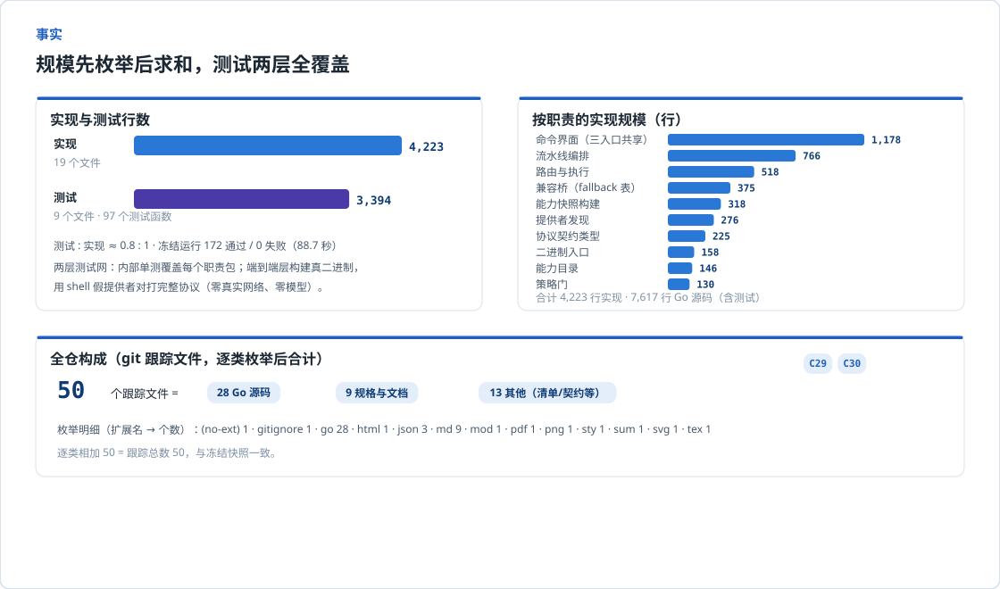
五个端到端案例全部由真二进制加假提供者跑出并冻结，可复算、可核查。
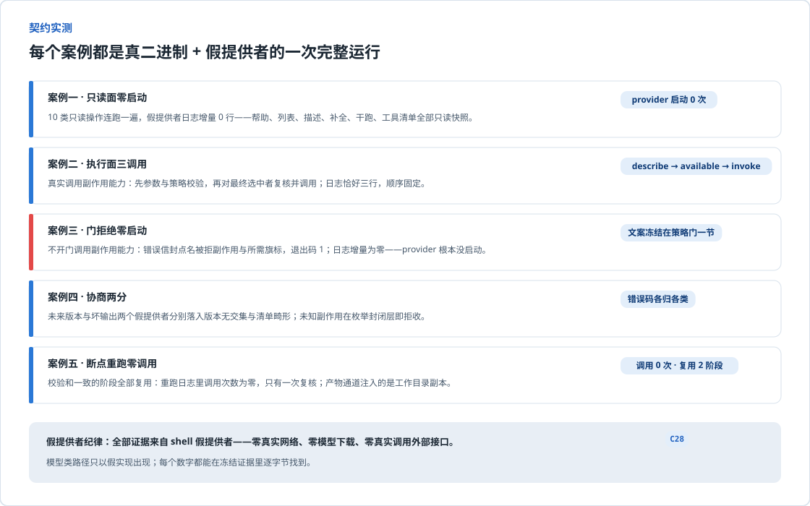
零脚本、零外部请求：整页仅引用同目录面板文件，无任何网络依赖。显示层执行六条禁令：不出现引擎源码文件名、代码坐标、逐字摘录、内部标识符、内部路径与任何生成器或重建命令；豁免词表（公开契约词汇与冻结数据字符串）登记在交付目录证据层。位图三件（两倍全页、灰度版、缩略图）与逐节裁片由交付目录渲染产物提供，渲染断言含全页高度等式。